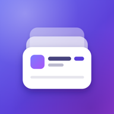

Privacy Policy
The short version
Subbo keeps your subscriptions on your phone. There is no account and no bank login, and we (Aplogon) do not collect, see or sell the subscriptions you enter. The free version shows ads from Google AdMob, which collects device identifiers and other data as described below.
Who we are
Subbo is made by Aplogon, an independent app developer based in Sri Lanka. Aplogon is responsible for this app and this policy. Privacy questions: apexfordinith@gmail.com.
Information you enter
Names, prices, billing dates, categories, notes and other details you add are stored only in Subbo's private storage on your phone. Subbo never sends them to us or to anyone else. If your phone's Android backup is turned on, Android may include this data in your own Google account backup so it can be restored or copied to a new phone; that backup is managed by Google under your Google account settings.
Backup and CSV export files are created only when you ask. Subbo opens Android's share sheet, and the file goes only to the app or place you pick (for example Drive, Files or email), which then handles it under its own policy. These files are not encrypted, so keep them somewhere safe. A working copy can stay in Subbo's private cache on your phone until Android clears it. Restoring reads only the file you pick.
If you tap a website link you saved, or a link in a “How to Cancel” guide, it opens in your browser, and that website can see the visit.
Reminders
Renewal reminders are scheduled locally on your phone by Android. Nothing is sent to a server to deliver them. A reminder shows the subscription's name and price, and may appear on your lock screen depending on your Android notification settings.
App Lock
If you turn on App Lock, unlocking uses Android's own fingerprint, face or screen-lock check. Subbo only learns whether the check passed; your fingerprint, face data and PIN stay with Android and are never received or stored by Subbo.
App Lock protects opening the app. Reminder notifications and the home-screen widget, if you add it, can still show subscription names and prices outside the app.
Home-screen widget
If you add the Subbo Pro widget, Subbo saves your next few charges and your monthly total in its own storage so Android can show them on your home screen. This stays on your phone, but anyone who can see your home screen can see it, even when App Lock is on.
Exchange rates
Subbo includes approximate exchange rates. Only when you tap “Update Rates” (Settings › Exchange Rates) does the app download current rates from ExchangeRate-API's free public service at open.er-api.com, over HTTPS. The request contains no information about you or your subscriptions. Like any web request, the service can see your device's IP address and the time of the request.
Advertising (free version)
The free version shows ads served by Google AdMob. To show and measure ads, and to prevent fraud and abuse, Google's ads SDK in Subbo collects your device's advertising ID and app set ID, your IP address (from which Google estimates your approximate location), information about how you use the app and interact with ads (such as app launches, ad views and taps), and diagnostic data about the SDK's performance and crashes. This information goes to Google, which may share it with its advertising partners; where a consent message is shown, it lists them. Ad requests never include the subscriptions you enter.
Where the law requires it (the European Economic Area, the UK and Switzerland), Subbo uses Google's consent tool to ask for your choice before any ad is requested. If you decline personalised ads, you may still see ads that are not personalised; depending on your choices, these can still use your IP address and, where you allowed it, device identifiers for frequency capping, aggregated ad reporting and fraud prevention. The consent tool uses your IP address to work out which rules apply to you, and stores your choice on your phone.
In US states whose privacy laws give you the right to opt out of the sale or sharing of personal information for targeted advertising, you can opt out the same way. Where these choices apply to you, you can change them at any time in Settings › Ad Privacy Choices; the option appears only where the law requires it. You can also reset or delete your advertising ID in your phone's settings (Privacy › Ads, or Google › Ads on some phones).
Learn how Google uses information from apps that use its services: policies.google.com/technologies/partner-sites.
Subbo Pro removes all ads.
Purchases
Subbo Pro is sold through Google Play, which processes your payment under Google's own privacy policy. Google Play tells the app what your Google account has bought (a product ID, order number and purchase token) so Subbo can unlock Pro. Subbo keeps only whether Pro is active, which plan you have and when it last checked, on your phone, and re-checks with Google Play from time to time. We never receive your card or payment details.
What Aplogon receives
Aplogon has no server and never receives the subscriptions you enter. We receive information only in these cases:
- If you email us, we get your email address, your message, and the app version, Android version and language setting that Subbo adds at the bottom of the email (you can delete them before sending).
- When you buy Subbo Pro, Google Play gives us an order record (such as the order number, product, price, date and country).
- Google Play and AdMob give us statistics and crash reports about the app, which do not include your subscriptions.
We use this only to provide support, handle purchases and improve the app, and we never sell it.
Data retention and deletion
Your subscriptions stay on your phone until you delete them (Settings › Delete All Data removes every subscription; your app settings stay) or uninstall Subbo, which removes everything it stores on the phone. If Android backup is on, a copy may stay in your Google account backup after you delete them or uninstall, and may be restored if you reinstall; Google manages that copy under your Google account's backup settings. Backup or CSV files you shared stay wherever you saved them.
Aplogon never receives the subscriptions you enter, so we have no copy to delete. If you email us, we keep your message only as long as needed to help you, and you can ask us to delete it. Purchase records are kept by Google Play under its own policies. Data collected by Google for ads is kept under Google's own policies; you can reset or delete your advertising ID in your phone's settings.
Security
Your subscriptions are kept in Subbo's private app storage, which other apps cannot read. Ad and exchange-rate requests travel over encrypted HTTPS (TLS) connections.
Children
Subbo is meant for adults and is not directed to children. We do not knowingly collect personal information from children under 13, or under the minimum age that applies where they live. If you believe a child has sent us personal information, for example by email, write to apexfordinith@gmail.com and we will delete it.
Your choices
- Delete every subscription at any time with Settings › Delete All Data. Uninstalling removes everything Subbo stores on your phone; a copy in your Android backup, and any files you exported, are kept until you delete them.
- Turn reminders off in Settings › Notifications or in Android's notification settings.
- Change your ad privacy choices in Settings › Ad Privacy Choices (where the law requires the option), reset or delete your advertising ID in your phone's settings, or upgrade to Pro to remove ads.
If you are in the EEA, the UK or Switzerland
Aplogon is the controller for Subbo. Google is an independent controller for the ad data its SDK collects. Personalised ads, and storing or reading identifiers on your device for ads, rely on your consent, which you can withdraw at any time in Settings › Ad Privacy Choices. Ads that are not personalised, ad measurement and fraud prevention rely on legitimate interests: ads pay for the free version, and fraud prevention keeps them safe. We answer your emails and handle purchases to provide the service you asked for. Google may process ad data outside your country, including in the United States, with the safeguards described in Google's privacy policy.
You have the right to access, correct or delete your personal data, to restrict or object to its use, to data portability, and to complain to your local data protection authority. Ad data is held by Google, so requests about it are best made to Google at myaccount.google.com/data-and-privacy. For anything we hold, such as your emails, write to apexfordinith@gmail.com.
US state privacy rights
In the free version, Google's ads SDK collects these categories of personal information: identifiers (advertising ID, app set ID, IP address), internet or other electronic network activity (app and ad interactions, SDK diagnostics) and approximate location. They are disclosed to Google for advertising, ad measurement and fraud prevention. Some state laws treat this as a “sale” or “sharing” of personal information for targeted advertising. You can opt out in Settings › Ad Privacy Choices where the option is shown, by deleting your advertising ID in your phone's settings, or by upgrading to Subbo Pro, which shows no ads.
You can ask us what personal information we hold about you, or ask us to correct or delete it, by writing to apexfordinith@gmail.com. We will not treat you differently for using these rights. We do not knowingly sell or share the personal information of anyone under 16.
Changes and contact
If this policy changes we will update this page and its effective date. Questions: apexfordinith@gmail.com.